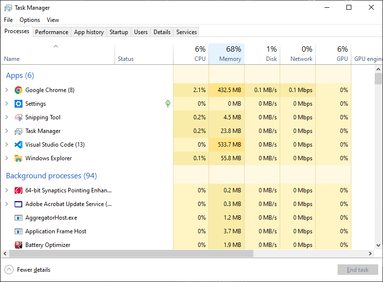
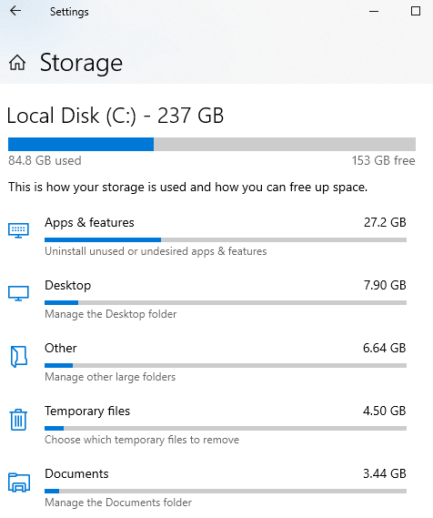

Simulating a Day in the Life of an IT Technician
Final IT Support Project — troubleshooting six simultaneous problems on a delivered system and preparing a final report for the manager
01 / Mission goal
This final project brings the course skills together in a single realistic scenario: on my first day as an IT technician at a company, I am handed a system that the user is complaining about. The goal is, for each problem, to choose the right diagnostic tool, analyze the likely cause based on the course concepts, provide a safe step-by-step solution, and finally write a clear report that a non-technical manager can understand.
02 / Scenario and tools used
Scenario: a system has been handed over that the user complains about, and it has six simultaneous problems:
- The system is slow overall.
- Many programs run at Startup.
- DNS is not working properly and some websites do not open.
- Drive C is almost full.
- A driver has a problem (a warning sign in Device Manager).
- A specific program does not run at all.
Tools used:
- Task Manager: checking resource usage, running processes and the Startup tab.
- Command Prompt (CMD): network commands such as ping, nslookup and ipconfig for DNS troubleshooting.
- Device Manager: checking driver status and updating or rolling back drivers.
- Disk Cleanup: freeing up space on drive C.
Runtime environment: Windows 10 or 11, with Administrator access where needed.
03 / Execution steps
The overall workflow, repeated for each of the six problems:
- Diagnosing the problem: for each complaint, we determine exactly which tool can diagnose the problem.
- Choosing the right tool: from the tools covered in the relevant chapters (Task Manager, CMD and network commands, Device Manager, Disk Cleanup), we choose the right one.
- Finding the cause: for each problem, we write a likely cause based on observations and the workshop's concepts.
- Providing the solution: we write each problem's solution step by step and observe safety warnings before sensitive steps (Disk or Registry).
- Writing the report: a final report like a real technician's report for the manager is prepared, including a summary of the problems, the actions taken and future recommendations.
Creating a restore point before starting troubleshooting
A Restore Point is a snapshot of the system settings, drivers and Registry at one moment. If a change (such as installing a driver or editing the Registry) causes a problem, the system can be returned to that point. The user's personal files are not deleted by this, and a restore does not bring them back either; therefore this method is not a substitute for a Backup.
- From the Start menu, search for and open Create a restore point (or run SystemPropertiesProtection in Win + R). The System Properties window opens on the System Protection tab.
- In Protection Settings, we select drive C: and check the Protection status.
- If Protection is Off, we click Configure, select Turn on system protection, set the maximum disk space usage to a small value (for example 5 to 10 percent) and click OK.
- We click the Create button.
- We enter a descriptive name, for example Before-IT-Troubleshooting (the date and time are added automatically) and click Create again.
- We wait a moment for the message The restore point was created successfully to appear and then click Close.
Restore method (if a problem occurs): on the same System Protection tab, click System Restore, select the restore point that was created and continue through the steps to Finish; the system restarts and returns to that state. This tool can also be run directly with the rstrui.exe command.
Command-line method (optional): open PowerShell with Run as administrator and run:
By default, Windows does not allow more than one automatic Restore Point to be created this way in any 24 hours; if an error or warning message appears, we use the graphical method above.


04 / Findings and technical analysis
The table below summarizes the diagnostic tool and likely cause for each problem.
| Problem | Diagnostic tool | Likely cause |
|---|---|---|
| Overall system slowness | Task Manager (Processes and Performance tabs) | High CPU, RAM or Disk usage by applications and background processes |
| Too many programs in Startup | Task Manager (Startup tab) | Programs that added themselves to Windows startup during installation |
| DNS and websites not opening | CMD (ping, nslookup, ipconfig) | Corrupted DNS cache or an incorrect DNS address |
| Drive C full | Disk Cleanup · Storage settings | Temporary files, leftover updates, the Recycle Bin and large downloads |
| Driver warning | Device Manager | A driver that is not installed, incompatible or corrupted (for example after an update) |
| A program does not run | Task Manager · checking the error message | A process hung in the background, missing permission, incompatibility or a corrupted installation |
- Several problems are related: a full drive C and a large number of Startup programs can themselves lead to overall slowness; therefore the order of fixing the problems matters.
- In DNS troubleshooting, testing a ping to an IP address (such as 8.8.8.8) versus a ping to a domain name shows the difference: if the IP responds but the domain name does not, the problem is with DNS and not with the internet connection.
- The key part of the analysis is separating the “symptom” from the “cause”; for example, slowness is the symptom, and heavy or Startup programs are the cause.
05 / Problems and solutions
Tool: Task Manager
- We press Ctrl + Shift + Esc.
- In the Processes tab, we click the CPU, Memory and Disk columns to sort processes by highest usage.
- In the Performance tab, we review the charts; usage close to 100% that is sustained is a sign of pressure on that resource.
- We close unnecessary and resource-heavy programs with End task (system processes are not closed).
- If a process looks suspicious, we run a full Windows Security scan and then restart the system.

Tool: Task Manager (Startup tab)
- In Task Manager we go to the Startup tab.
- We identify programs whose Startup impact column is High.
- We disable unnecessary programs (such as updaters, messengers and launchers) with Disable.
- We do not disable antivirus and system programs. This change is reversible and can be undone with Enable.
- We restart the system and check how fast Windows starts.

Tool: Command Prompt
- We open CMD. First we test the basic connection with a ping to an IP and then compare it with a ping to a domain name.
- If the IP ping succeeds but the domain name is not recognized, the problem is DNS. We check with nslookup.
- We clear the DNS cache and check the IP settings.
- If the problem continues, we set the DNS server address in the network adapter settings (Properties → IPv4) to a valid DNS such as 8.8.8.8 or 1.1.1.1.
- Finally we test several websites again.
Tool: Disk Cleanup
- With Win + R we run cleanmgr and select drive C.
- We click Clean up system files so that more items, such as Windows update files, are also shown.
- We check safe items such as Temporary files, Temporary Internet Files, Thumbnails and the Recycle Bin.
- After confirming, the cleanup is performed and we record the space freed.
- To find other large files, we use Settings → System → Storage and uninstall unused programs.


Tool: Device Manager
- With Win + X I open Device Manager.
- We find the device with the yellow warning triangle and double-click it to read the status message and error code.
- From the Driver tab, I click Update driver.
- If the problem started after an update, we try Roll Back Driver.
- If the problem continues, we Uninstall device and let Windows reinstall it with Scan for hardware changes, or we install the official driver manually.
Tool: Task Manager and checking the error message
- We note the program's exact error message and check in Task Manager (Ctrl + Shift + Esc) that the program's previous process is not stuck in the background (if it is, End task).
- I run the program with Run as administrator.
- In the program's Properties, we try the Compatibility tab (running in compatibility mode).
- I make sure the antivirus or SmartScreen has not blocked the program.
- If the problem continues, we uninstall the program and reinstall it from a clean copy.
06 / Final report for the manager
Subject: report on reviewing and fixing the problems of the user's delivered system
Summary: the system was delivered with six simultaneous problems. The causes were identified and corrective actions were taken. The main problems were related to resource congestion, network settings and lack of system maintenance.
| Problem | Plain explanation | Action taken | Status |
|---|---|---|---|
| System slowness | Several programs were using the computer's resources at the same time | Closed extra programs and checked for malware | Resolved |
| Slow startup | Many programs were starting automatically with Windows | Disabled unnecessary Startup programs | Resolved |
| Websites not opening | The system could not translate website names into addresses (a DNS problem) | Cleared the DNS cache and set a valid DNS | Resolved |
| Drive C full | Temporary and unnecessary files were taking up space | Cleaned up with Disk Cleanup and removed unused programs | Resolved |
| Driver warning | The software linking Windows to a component had a problem | Updated or reinstalled the official driver | Resolved |
| Program not running | The program or its previous process had a problem | Closed the hung process, ran as administrator and reinstalled if needed | Resolved |
Future recommendations:
- Periodic disk cleanup (for example once a month) and monitoring of free space on drive C.
- Keep Startup programs limited and do not install unnecessary software.
- Keep Windows and drivers up to date from official sources.
- Make regular backups of important data.
- Give the user a short training on installing trusted programs and reporting problems quickly.
07 / Summary and lessons learned
This project showed that troubleshooting in real work is a combination of choosing the right tool, analyzing the cause and carrying out the solution safely. In a few minutes you can find the source of slowness with Task Manager, separate a DNS problem from a connection problem with CMD, assess hardware status with Device Manager and free up space with Disk Cleanup.
The most important thing I learned is that many problems are related, and following safety principles (a Restore Point, a Registry backup and the official driver source) is just as important as the solution itself. Writing a simple, clear report for a non-technical manager is also an inseparable part of an IT Support job.